I recently started using Azure Quota Groups, and they solved a problem I had been handling subscription by subscription: moving unused compute quota to where it was actually needed. When an application moves from a proof of value to testing and then production, being able to redistribute an existing allowance yourself can save a lot of administrative work.
The useful discovery for me was that I did not necessarily need another quota increase request every time the requirement moved to a different subscription. If the subscriptions are eligible and the unused quota is already available, a quota group provides a self-service path to reallocate it.
There are a few important boundaries, though. This is quota management, not a way to reserve hardware, bypass regional restrictions, or let deployments automatically borrow quota from another subscription. Understanding that distinction makes the feature much easier to use correctly.
The mental model that helped me
A quota group is an Azure Resource Manager object created at management group scope. It logically groups subscriptions so that you can manage and redistribute supported compute quota across them.
The workflow is explicit:
- Return unused quota from a member subscription to the quota group.
- Allocate available group quota to another member subscription.
- Deploy against that destination subscription’s quota limits.
I think of it as an allowance I can rebalance, rather than a shared account that every deployment draws from automatically. The deployment-time quota check still happens against the subscription.
A new quota group starts with a group limit of zero. Creating it does not automatically sweep up every member subscription’s unused allowance. You populate it by returning unused quota from member subscriptions, or by obtaining approval for a group-level quota increase.
One group can manage multiple regions and VM families, but each transfer or increase request is scoped to a particular region and VM family. This does not turn quota for one family or region into quota for another.
Microsoft’s Azure Quota Groups documentation explains the supported operations and current limitations.
Quota is not capacity
This is the most important caveat in the whole process.
- Quota is the allowance to deploy a certain quantity of resources.
- Capacity is the actual compute hardware available for the requested VM size in the target region or availability zone.
Moving quota can resolve a subscription allowance problem. It cannot manufacture capacity in a constrained region. A deployment can still fail with sufficient quota, and a request for additional group quota is subject to the same checks as a subscription quota increase request, including capacity checks.
For standard VM deployments, check both the VM-family vCPU quota and Total Regional vCPUs on the destination subscription. Satisfying one does not remove the other requirement. Microsoft covers these checks in vCPU quotas for Azure Virtual Machines.
Before opening the portal
I would check these prerequisites before trying to create the group:
- Subscription eligibility: The documented supported offers are Enterprise Agreement, Microsoft Customer Agreement, and Internal subscriptions. Do not assume every subscription offer qualifies.
- Supported resources and cloud: Quota Groups currently support IaaS compute resources in Azure public cloud regions. This is not a universal quota-sharing feature for every Azure service.
- Resource providers: Register
Microsoft.QuotaandMicrosoft.Computeon every participating subscription before adding it to the group. Confirm registration has completed. - Management group: Choose the management group under which to create the quota group. Its scope matters because quota-group permissions are inherited from that management group.
- Permissions: Assign GroupQuota Request Operator on that management group, plus Quota Request Operator on all participating subscriptions. Microsoft also lists Reader on those subscriptions for viewing quota-group resources in the portal.
- Membership: A subscription can belong to only one quota group at a time.
- Region and zone access: Ensure each participating subscription has the required access. Quota groups do not grant regional or zonal access, and transfers or deployments can fail without it.
An administrator with the appropriate permissions may need to handle provider registration and role assignments separately from day-to-day quota operations. The Quota API documentation describes Microsoft.Quota registration, and the region access request process covers restricted-region access.
One detail worth calling out: quota-group membership is independent of the management-group hierarchy. A group can include subscriptions from other management groups, and membership is not automatically synchronised with the parent management group. Choose the hosting scope for access control, then explicitly manage which subscriptions participate.
Step 1: Create the quota group
The portal flow is straightforward once those prerequisites are in place.
The screenshots below show the portal workflow with environment-specific names, account information, selected workload details, and numerical values removed using opaque redactions. The numerical example later in the post is fictional, not a reconstruction of these screenshots. Portal wording and layout may change.
Find Quotas
Search for Quotas in the Azure portal and open the service.
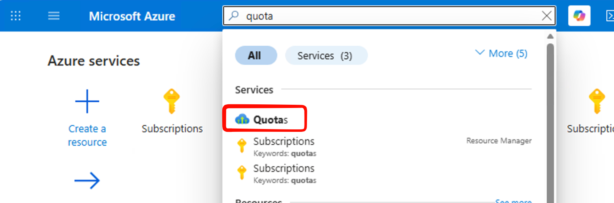
1. Open the Quotas service from the portal search.
Under Settings, select Quota groups.
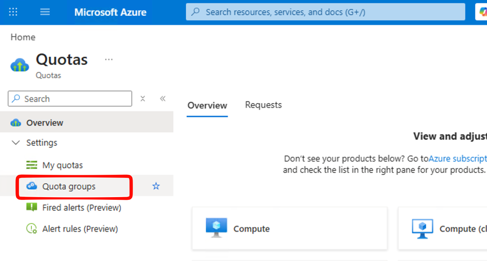
2. The Quota groups entry sits alongside My quotas.
Choose the management-group scope
Use the management-group selector to find the scope you want to work with, then select Create.
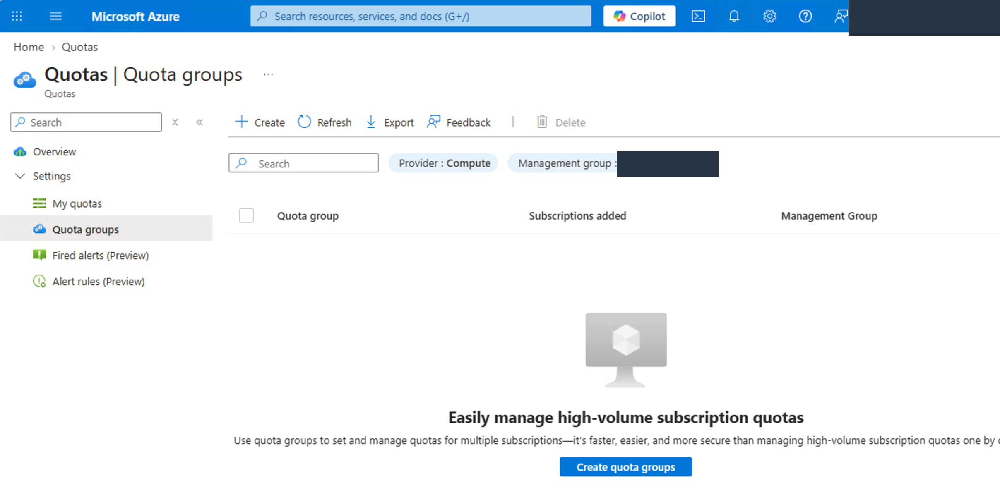
3. Select the appropriate management-group scope before creating the group.
On Basics, enter your chosen quota-group name and confirm the management group. The Change management group link lets you adjust the selection.
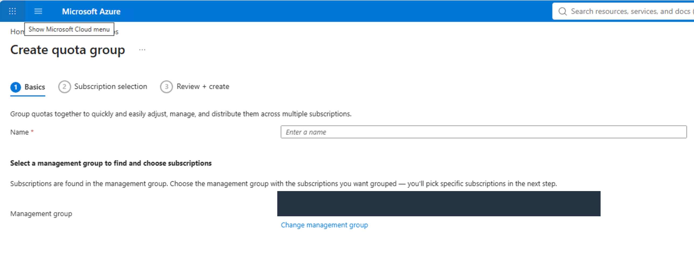
4. Confirm the hosting management group and enter a name.
Add participating subscriptions
On Subscription selection, select the subscriptions that need to participate. If an entry is unavailable, check its eligibility, existing quota-group membership, provider registration, and your permissions rather than assuming the portal is broken.
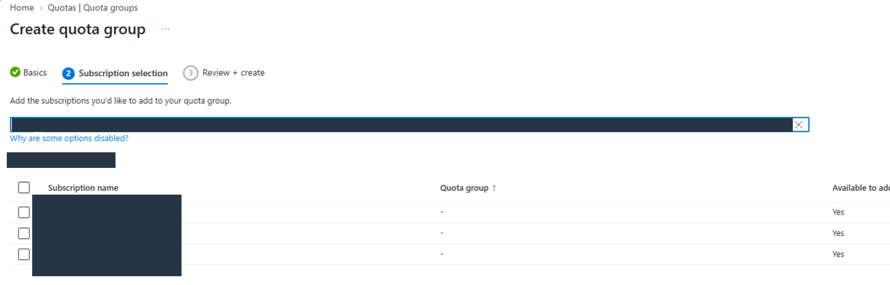
5. Explicitly select the subscriptions to include.
Review the configuration on Review + create, then create the group.
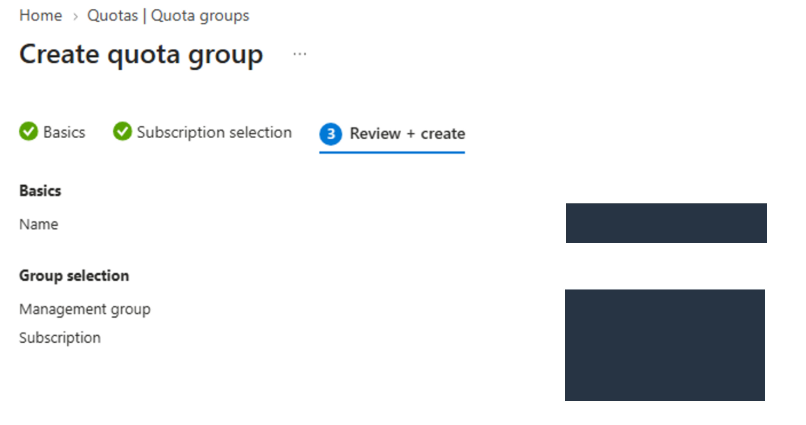
6. Review the selected scope and membership before creating the group.
The new group appears in the quota-groups list. Open it to work with the relevant quotas.
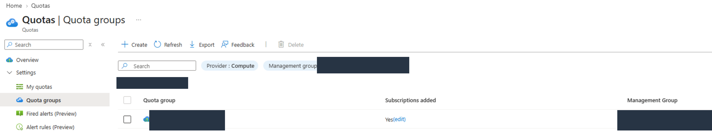
7. Open the newly created group. Membership alone does not populate its available quota.
Step 2: Return unused quota from the source subscription
Open the group, select the required region, and find the relevant VM-family quota. Check this combination carefully: you are not moving a region-independent or family-independent allowance.
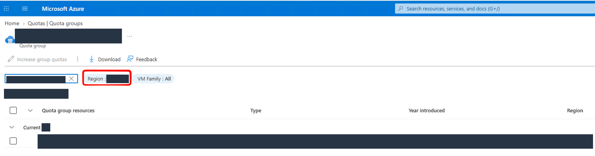
8. Select the region and VM-family quota you want to manage.
Open that family quota to see the participating subscriptions. Select the source subscription, then choose Manage subscription quota → Return quota to family limit.
The naming took a moment to click for me. Here, returning quota means reducing the source subscription’s allowance and making that unused amount available at group level for the selected family and region. It does not move virtual machines or their data.
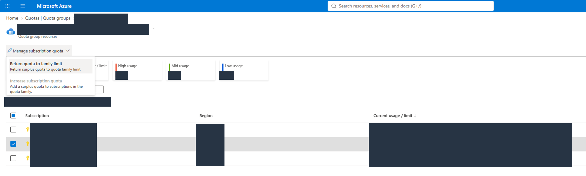
9. Choose the source subscription and the return-quota action.
In the Distribute quota form, confirm that the operation is Return quota to group quota. With Custom value, enter the amount to return and inspect the resulting subscription limit before continuing to Review + distribute.
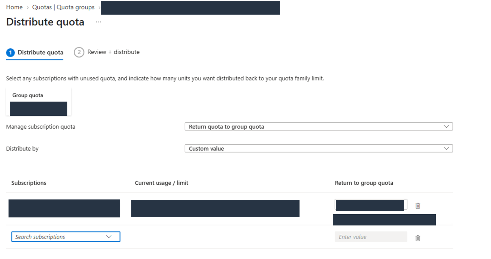
10. Enter the amount to return, then check the resulting source limit.
Only return genuinely unused quota. Keep enough allowance for the source subscription’s current usage and any near-term scaling requirements. Also, do not assume stopping or deallocating a VM releases its quota consumption: Microsoft’s VM quota documentation notes that allocated and deallocated VMs both count.
After submitting the change, check the notification and refresh the quota view.
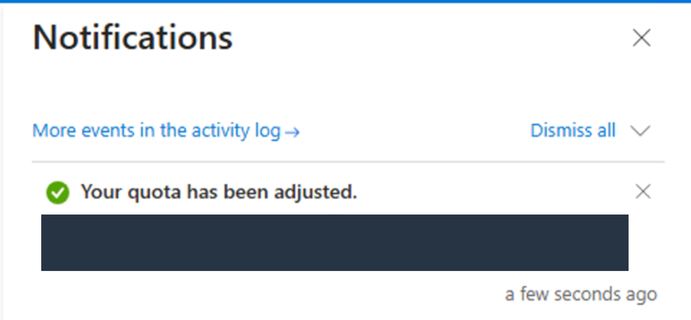
11. The notification confirms that the subscription quota was adjusted.
The Group quota tile is the next place to check. Confirm that the amount available to allocate has increased and that the source subscription’s limit has decreased as expected.
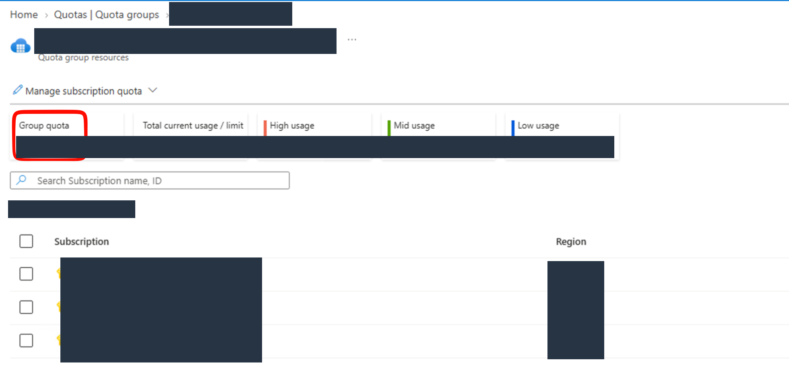
12. Verify the group balance and the source limit after the operation completes.
Step 3: Allocate group quota to the destination subscription
Now select the destination subscription in the same region and VM-family view. Choose Manage subscription quota → Increase subscription quota.
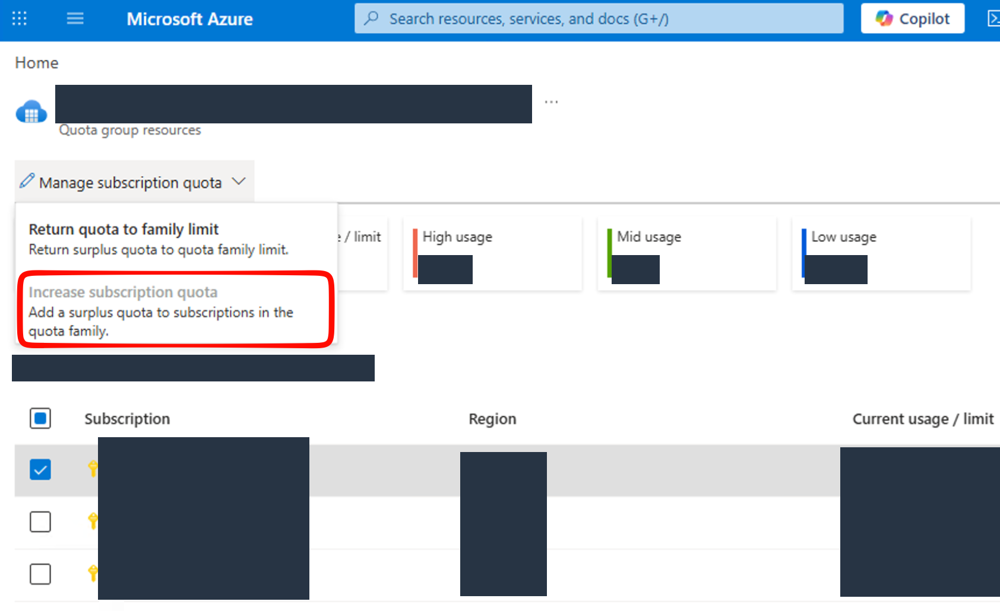
13. Select the destination and choose the increase-quota action.
In the distribution form, confirm Increase subscription quota, enter the amount to allocate, and check the resulting destination limit. Review and submit the operation.
In this flow you are allocating from the group’s available quota, not requesting new quota from Microsoft. If the group does not have enough available, you need another return of unused quota or an approved group-limit increase first.
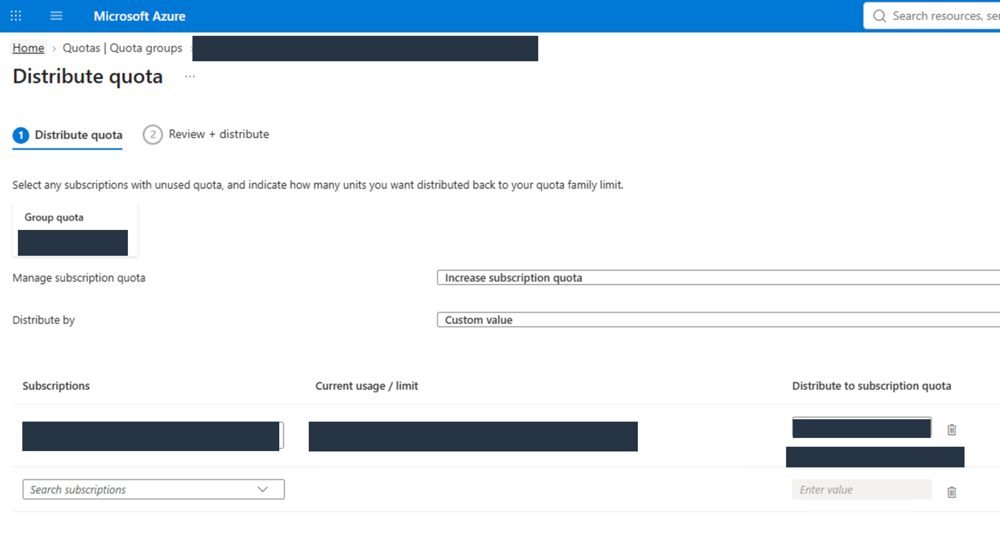
14. Allocate an amount from the available group balance to the destination.
Check the success notification, then refresh the overview.
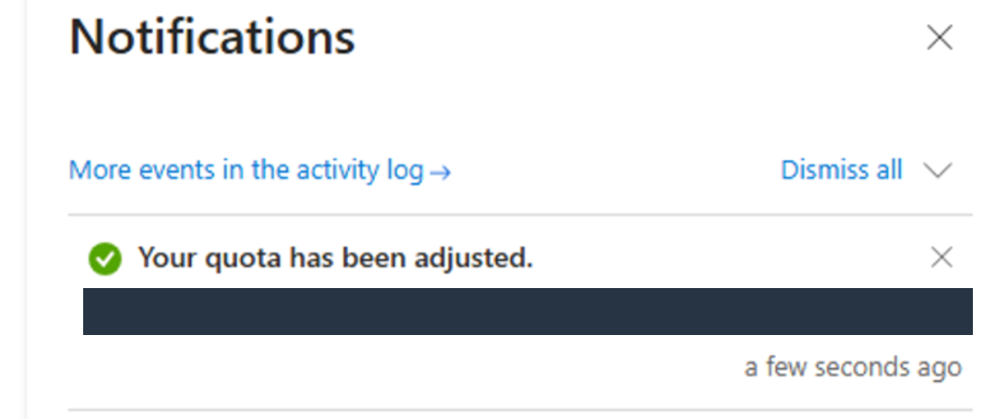
15. Confirm the destination adjustment succeeded.
Finally, verify the new distribution across the member subscriptions. Check the source limit, destination limit, remaining group quota, and the destination’s other applicable deployment limits before starting the workload.
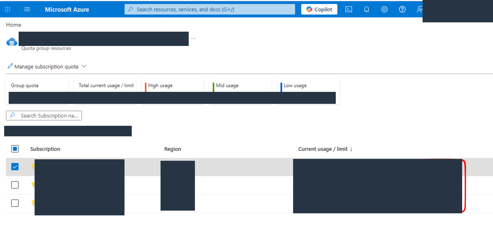
16. Review the allocation across subscriptions after the changes.
A small example with fictional numbers
For one supported VM family in one region, imagine the following starting point:
| Stage | Source subscription limit | Available group quota | Destination subscription limit |
|---|---|---|---|
| Before redistribution | 120 vCPUs | 0 vCPUs | 20 vCPUs |
| Return 40 unused vCPUs | 80 vCPUs | 40 vCPUs | 20 vCPUs |
| Allocate 40 vCPUs to the destination | 80 vCPUs | 0 vCPUs | 60 vCPUs |
Assume the source’s quota-counted usage is 32 vCPUs and that keeping an 80-vCPU limit provides enough headroom for its needs. Returning 40 is therefore a deliberate planning decision, not simply emptying every unused unit.
The total allowance in this example remains 140 vCPUs throughout. No new quota has been created, no workload has moved, and no hardware has been reserved. The destination must still satisfy its total regional quota, access requirements, and actual capacity availability.
This is the part I found useful for an application progressing through environments: redistribute the unused allowance as the requirement changes, instead of treating every subscription as a completely separate quota-administration exercise.
A few things I would check when it does not work
- The subscription cannot be added: Verify its offer eligibility, existing group membership, provider registrations, and the caller’s permissions.
- The portal view is missing or incomplete: Check the management-group scope, filters, and the documented Reader access on participating subscriptions.
- A transfer fails: Recheck the exact region and VM family, available unused quota or group balance, and the subscriptions’ regional or zonal access.
- Quota looks sufficient, but deployment fails: Check both family and total regional vCPU limits. Then investigate capacity or access separately rather than treating every failure as a quota problem.
- The group needs more quota overall: Submit a group-level limit increase request. Reallocation is self-service, but an increase still requires approval and can be rejected.
There is also a lifecycle trap worth knowing about. Microsoft warns that deleting the hosting management group causes loss of access to the group limit. Before removing that scope, follow the documented cleanup sequence: allocate the group quota back to subscriptions, remove subscription memberships, then delete the quota-group object. Do not confuse removing subscriptions from a quota group with deleting the Azure subscriptions themselves.
What I took away
Quota Groups turned an awkward subscription-by-subscription task into a much more manageable allocation workflow for me. The value is not unlimited quota or guaranteed capacity. It is the ability to redistribute an existing, unused compute allowance yourself, with the right permissions and within the supported boundaries.
If you manage several subscriptions and regularly find unused quota sitting in the wrong place, this is worth a look. Start with a clear region-and-family requirement, retain sensible headroom in the source, and verify both sides after each transfer.